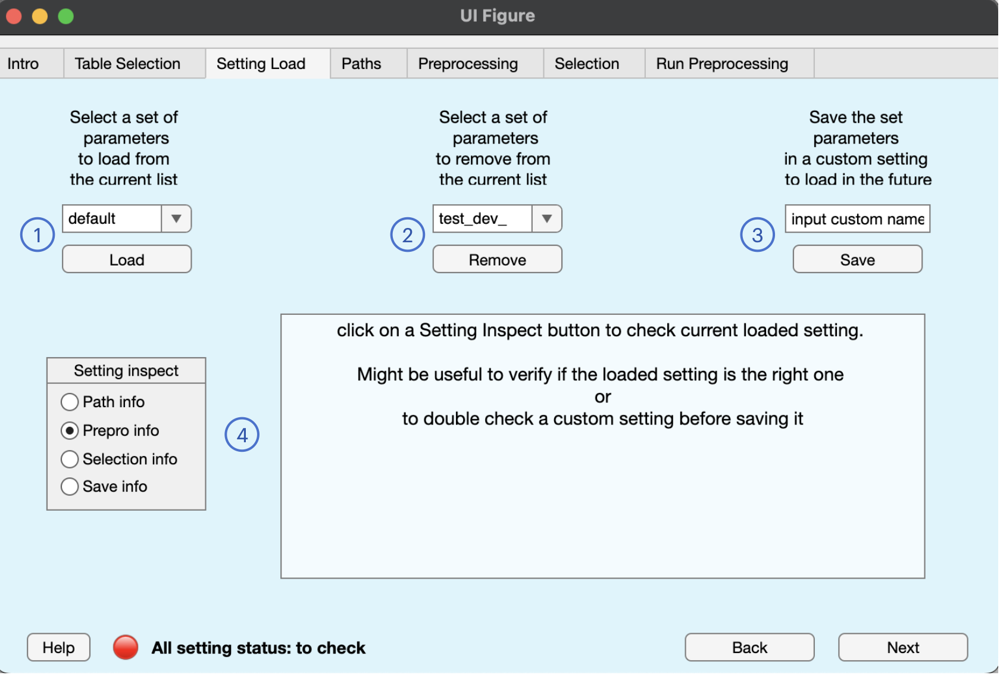

BIDSAlign allows you to store, load or remove a custom preprocessing configuration. This will help you avoid inputting everything every time you use BIDSAlign. At the function level, every set_X_info function (X can be 'path', 'preprocessing', 'selection', or 'save') has two parameters that you can use to save the specific struct variable inside a configuration folder. An example of a function call to save a custom set of path is
path_info = set_path_info(path_info, ...
'store_settings', true, ...
'setting_name', 'MyCustomName' ...
);
Every configuration file is stored in a subdirectory of the default_setting folder (located inside the __lib folder). Inside such folders, which has a name equals to setting_name, 1 to 4 .mat files will be saved depending on the number of custom configurations you choose to store.
To remove a configuration, just call the remove_settings function.
To load the entire or a specific file of an existing configuration, just call the load_settings function.

In this tab, you can load and remove existing configurations, or save the current one in a new or old setting. In particular, looking at the figure above, the following actions can be performed with the numbered buttons:
reset_default_settings function.The current preprocessing configuration can be inspected by clicking the proper button in the setting inspect button group.
Note: to update the inspection box of a particular struct already selected, just select another info and then click again on the desired one